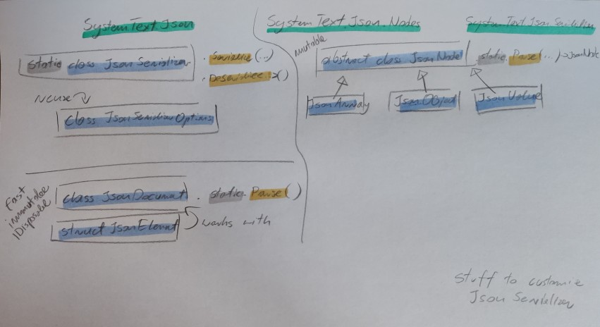

Json
Should I use System.Text.Json (STJ) or Newtonsoft.Json (previously Json.NET)?
use STJ, Newtonsoft is no longer enhanced with new features. The author works for Microsoft now on some non-json stuff.
Terms
marshal - assemble and arrange (a group of people, especially troops) in order.
"the general marshalled his troops"
marshalling (UK) (in computer science) (marshal US) - getting parameters from here to there
serialization - transforming something (data) to a format usable for storage or transmission over the network
JSON - Java Script Object Notation - data interchange format. https://www.json.org/json-en.html
Why this post
While analysing some logs I used FSharp.Data's JsonProvider. Only a few properties were relevant but JsonProvider stores the whole json in memory. With 10GB of logs to analyse I quick run out of memory.
Let's do some testing!
open System
open System.IO
open System.Text.Json
fsi.AddPrinter<DateTimeOffset>(fun dt -> dt.ToString("O"))
Environment.CurrentDirectory <- __SOURCE_DIRECTORY__ // ensures the script runs from the directory it's located in
// -------------------------------------------------------------------------
// sample log entry for testing
type LogEntry = {
Timestamp : DateTimeOffset
Level : string
Message : string
}
// only the properties we're interested in
type LogEntryRecord = {
Timestamp : DateTimeOffset
Level : string
}
let random = Random()
let levels = [ "INFO"; "WARN"; "ERROR"; "DEBUG" ]
let generateLogEntry () =
{
Timestamp = DateTimeOffset.Now.AddSeconds(-random.Next(0, 10000))
Level = levels.[random.Next(levels.Length)]
Message = String.replicate(random.Next(10, 100)) "x" // random string to simulate redundant content
}
List.init 7_000_000 (fun _ -> generateLogEntry()) // 7M entries is around 1GB of data
|> List.map (fun entry -> JsonSerializer.Serialize(entry))
|> fun lines -> File.WriteAllLines("./logs.json", lines)
let lines = File.ReadAllLines "./logs.json"
let runWithMemoryCheck lines singleLineParser =
GC.Collect()
let before = GC.GetTotalMemory(true)
let x = lines |> Array.map singleLineParser
GC.Collect()
let after = GC.GetTotalMemory(true)
let m = ((after - before) |> float) / 1024. / 1024. / 1024. // GB
x, m
#time
// -------------------------------------------------------------------------
open System.Text.Json.Nodes
#r "nuget: FSharp.Data"
open FSharp.Data
#r "nuget: FSharp.Json"
open FSharp.Json
type LogEntryJsonProvider = JsonProvider<"""
{
"Timestamp" : "2024-12-23T20:51:18.2020753+01:00",
"Level" : "ERROR",
"Message" : "File not found"
}""">
let fSharpDataJsonProvider = LogEntryJsonProvider.Parse
let fSharpDataJsonValue (x:string) =
let line = x |> FSharp.Data.JsonValue.Parse
let t = line.GetProperty("Timestamp").AsDateTimeOffset()
let l = line.GetProperty("Level").AsString()
{ Timestamp = t; Level = l }
let stjJsonSerializer (x:string) = JsonSerializer.Deserialize<LogEntryRecord>(x)
let stjJsonNode (line:string) =
let line = line |> JsonNode.Parse
let t = line.["Timestamp"].GetValue<DateTimeOffset>()
let l = line.["Level"].GetValue<string>()
{ Timestamp = t; Level = l }
let stjJsonDocument (x:string) =
use doc = x |> JsonDocument.Parse
let t = doc.RootElement.GetProperty("Timestamp").GetDateTimeOffset()
let l = doc.RootElement.GetProperty("Level").GetString()
{ Timestamp = t; Level = l }
let sharpJson (x:string) = Json.deserialize<LogEntryRecord> x
runWithMemoryCheck lines fSharpDataJsonProvider |> snd |> printfn "Memory used: %f GB" // Memory used: 4.420363 GB | Real: 00:00:35.829, CPU: 00:02:07.312, GC gen0: 84, gen1: 25, gen2: 8
runWithMemoryCheck lines fSharpDataJsonValue |> snd |> printfn "Memory used: %f GB" // Memory used: 0.521624 GB | Real: 00:00:16.557, CPU: 00:00:35.281, GC gen0: 29, gen1: 10, gen2: 4
runWithMemoryCheck lines stjJsonSerializer |> snd |> printfn "Memory used: %f GB" // Memory used: 0.521555 GB | Real: 00:00:10.823, CPU: 00:00:44.453, GC gen0: 11, gen1: 6, gen2: 4
runWithMemoryCheck lines stjJsonNode |> snd |> printfn "Memory used: %f GB" // Memory used: 0.521419 GB | Real: 00:00:09.533, CPU: 00:00:27.359, GC gen0: 16, gen1: 7, gen2: 4
runWithMemoryCheck lines stjJsonDocument |> snd |> printfn "Memory used: %f GB" // Memory used: 0.521525 GB | Real: 00:00:06.208, CPU: 00:00:17.546, GC gen0: 5, gen1: 4, gen2: 4
runWithMemoryCheck lines sharpJson |> snd |> printfn "Memory used: %f GB" // Memory used: 0.520846 GB | Real: 00:01:02.761, CPU: 00:01:20.578, GC gen0: 1022, gen1: 260, gen2: 4
Conclusion
FSharp.Data.JsonProvideris terrible compared to any other alternative (slow and uses lots more memory)STJ.JsonDocumentis the speed winner.FSharp.Jsonsupports F# types but it quite slow
System.Text.Json cheat sheet

open System
open System.Text.Json
// The System.Text.Json namespace contains all the entry points and the main types.
// The System.Text.Json.Serialization namespace contains attributes and APIs for advanced scenarios and customization specific to serialization and deserialization.
fsi.AddPrinter<DateTimeOffset>(fun dt -> dt.ToString("O"))
// System.Text.Json.JsonSerializer -> is a static class
// -> you can instantiate and reuse the JsonSerialization options
let jsonString = """{
"PropertyName1" : "dummyValue",
"PropertyName2" : 42,
"PropertyName3" : "2024-12-29T10:31:36.3774099+01:00",
"PropertyName4" : {"NestedProperty" : 42},
"PropertyName5" : [
42,
11
]
}"""
type InnerType = {
NestedProperty: int
}
type DummyType = {
PropertyName1: string
PropertyName2: int
PropertyName3: DateTimeOffset
PropertyName4: InnerType
PropertyName5: int list
}
type LogEntryRecord = {
Timestamp: DateTimeOffset
Level : string
}
// # JsonSerializer.Deserialize
// JsonSerializer.Deserialize<'Type>(jsonString)
// JsonSerializer.Deserialize<'Type>(jsonString, options)
// JsonSerializer.DeserializeAsync(stream, ...) <- only streams can be parsed async cuz parsing string is purely CPU bound
// Deserialization behaviour:
// - By default, property name matching is case-sensitive. You can specify case-insensitivity.
// - Non-public constructors are ignored by the serializer.
// - Deserialization to immutable objects or properties that don't have public set accessors is supported but not enabled by default.
// ^ I'm not sure about this cuz F# records seem to work just fine
JsonSerializer.Deserialize<LogEntryRecord>(jsonString)
// { Timestamp = 0001-01-01T00:00:00.0000000+00:00 Level = null }
// no properties match but JsonSerializer just returns default values
JsonSerializer.Deserialize<DummyType>(jsonString)
// val it: DummyType = { PropertyName1 = "dummyValue"
// PropertyName2 = 42
// PropertyName3 = 2024-12-29T10:31:36.3774099+01:00
// PropertyName4 = { NestedProperty = 42 }
// PropertyName5 = [42; 11] }
// Deserialization is case sensitive by default!
let jsonString2 = """{
"propertyName1" : "dummyValue",
"propertyName2" : 42
}"""
JsonSerializer.Deserialize<DummyType>(jsonString2)
// val it: DummyType = { PropertyName1 = null
// PropertyName2 = 0
// PropertyName3 = 0001-01-01T00:00:00.0000000+00:00
// PropertyName4 = null
// PropertyName5 = null }
let options = new JsonSerializerOptions()
options.PropertyNameCaseInsensitive <- true
JsonSerializer.Deserialize<DummyType>(jsonString2, options)
// val it: DummyType = { PropertyName1 = "dummyValue"
// PropertyName2 = 42
// PropertyName3 = 0001-01-01T00:00:00.0000000+00:00
// PropertyName4 = null
// PropertyName5 = null }
// # JsonSerializer.Serialize
// let's pretty print during testing
// by default the json is minified
let options = new JsonSerializerOptions()
options.WriteIndented <- true
JsonSerializer.Serialize(options, options)
//val it: string =
// "{
// "Converters": [],
// "TypeInfoResolver": {},
// "TypeInfoResolverChain": [
// {}
// ],
// "AllowOutOfOrderMetadataProperties": false,
// "AllowTrailingCommas": false,
// "DefaultBufferSize": 16384,
// "Encoder": null,
// "DictionaryKeyPolicy": null,
// "IgnoreNullValues": false,
// "DefaultIgnoreCondition": 0,
// ...
// Serialization behaviour:
// - by default, all public properties are serialized. You can specify properties to ignore. You can also include private members.
// - by default, JSON is minified. You can pretty-print the JSON.
// - by default, casing of JSON names matches the .NET names. You can customize JSON name casing.
// - by default, fields are ignored. You can include fields.
// # JsonNode and JsonDocument
// Should you use JsonNode or JsonDocument? see link below
// https://learn.microsoft.com/en-us/dotnet/standard/serialization/system-text-json/use-dom#json-dom-choices
// JsonDocument -> immutable
// JsonDocument -> faster, IDisposable, uses some shared memory pool
// https://learn.microsoft.com/en-us/dotnet/standard/serialization/system-text-json/use-dom
// JsonNode -> mutable
open System.Text.Json.Nodes
let x = JsonNode.Parse(jsonString) // type(x) = JsonNode
x.ToJsonString()
x.["PropertyName3"].GetValue<DateTimeOffset>()
x.["PropertyName3"].GetPath()
x.["PropertyName4"].["NestedProperty"].GetPath()
x.["PropertyName2"] |> int
// x.["PropertyName3"] |> DateTimeOffset // TODO - why can't I use this explicit conversion?
x["PropertyName4"].GetValueKind() |> string // "Object"
x["NonExistingProperty"] // null
x["NonExistingProperty"].GetValue<int>() // err - System.NullReferenceException
x["PropertyName5"].AsArray() |> Seq.map (fun a -> a.GetValue<int>()) // ok
x["PropertyName5"].AsArray() |> Seq.map int // ok
x["PropertyName5"].[0].GetValue<int>() // ok
// create a json object
let m = new JsonObject()
m["TimeStamp"] <- DateTimeOffset.Now
m.ToJsonString() // {"TimeStamp":"2024-12-29T16:06:17.046746+01:00"}
m["SampleProperty"] <- new JsonArray(1,2)
m.Remove("TimeStamp")
let a = JsonNode.Parse("""{"x":{"y":[1,2,3]}}""")
a.["x"] // this is a JasonNode
a.["x"].AsObject() // this returns a JsonObject
a.["x"].AsObject() |> Seq.map (fun x -> printfn "%A" x) // iterate over properties of the object
a.["x"].ToJsonString() // you can serialize subsection of the json
// {"y":[1,2,3]}
JsonNode.DeepEquals(x, a) // comparison
F# types and json serialization
open System.Text.Json
// Record - OK
type DummyRecord = {
Text: string
Num: int
}
let r = { Text = "asdf"; Num = 1 }
JsonSerializer.Serialize(r) |> JsonSerializer.Deserialize<DummyRecord>
let tuple = (42, "asdf")
JsonSerializer.Serialize(tuple) |> JsonSerializer.Deserialize<int * string>
type TupleAlias = int * string
let tuple2 = (43, "sfdg") : TupleAlias
JsonSerializer.Serialize(tuple2) |> JsonSerializer.Deserialize<TupleAlias>
// Discriminated Union :(
type SampleDiscriminatedUnion =
| A of int
| B of string
| C of int * string
let x = A 1
JsonSerializer.Serialize(x) // eeeeeeeeeeeeee !
// Option - OK
JsonSerializer.Serialize(Some 42) |> JsonSerializer.Deserialize<int option>
JsonSerializer.Serialize(None) |> JsonSerializer.Deserialize<int option>
open System
type RecordTest2 = {
Timestamp: DateTimeOffset
Level: string
TestOp: int option
}
// Discriminated Union is supported in FSharp.Json
// https://github.com/fsprojects/FSharp.Json
#r "nuget: FSharp.Json"
open FSharp.Json
let data = C (42, "The string")
let json = Json.serialize data
// val json: string = "{
// "C": [
// 42,
// "The string"
// ]
// }
let deserialized = Json.deserialize<SampleDiscriminatedUnion> json
// val deserialized: SampleDiscriminatedUnion = C (42, "The string")
More on FSharp.Data's JsonValue
#r "nuget:FSharp.Data"
open FSharp.Data
let j = JsonValue.Parse("""{"x":{"y":[1,2,3]}}""")
j.Properties()
// val it: (string * JsonValue) array =
// [|("x", {
// "y": [
// 1,
// 2,
// 3
// ]
// })|]
j.["x"].["y"].AsArray()
j.TryGetProperty "x"
// JsonValue is a discriminated union
// union JsonValue =
// | String of string
// | Number of decimal
// | Float of float
// | Record of properties: (string * JsonValue) array
// | Array of elements: JsonValue array
// | Boolean of bool
// | Null
//
// docs:
// https://fsprojects.github.io/FSharp.Data/reference/fsharp-data-jsonvalue.html
// https://fsprojects.github.io/FSharp.Data/library/JsonValue.html <- if you'll be working with JsonValue read this
//
// there are also extension methods:
// https://fsprojects.github.io/FSharp.Data/reference/fsharp-data-jsonextensions.html
//
// AsArray doesn't fail if the value is not an array, as opposed to other AsSth methods
// See below how extension methods are defined
// source: https://github.com/fsprojects/FSharp.Data/blob/main/src/FSharp.Data.Json.Core/JsonExtensions.fs
open System.Globalization
open System.Runtime.CompilerServices
open System.Runtime.InteropServices
open FSharp.Data.Runtime
open FSharp.Core
[<Extension>]
type JsonExtensions =
/// Get all the elements of a JSON value.
/// Returns an empty array if the value is not a JSON array.
[<Extension>]
static member AsArray(x: JsonValue) =
match x with
| (JsonValue.Array elements) -> elements
| _ -> [||]
/// Get a number as an integer (assuming that the value fits in integer)
[<Extension>]
static member AsInteger(x, [<Optional>] ?cultureInfo) =
let cultureInfo = defaultArg cultureInfo CultureInfo.InvariantCulture
match JsonConversions.AsInteger cultureInfo x with
| Some i -> i
| _ ->
failwithf "Not an int: %s"
<| x.ToString(JsonSaveOptions.DisableFormatting)
// construct a json object
let d =
JsonValue.Record [|
"event", JsonValue.String "asdf"
"properties", JsonValue.Record [|
"token", JsonValue.String "tokenId"
"distinct_id", JsonValue.String "123123"
|]
|]
d.ToString().Replace("\r\n", "").Replace(" ", "")
// if you want to process the json object
for (k, v) in d.Properties() do
printfn "Property: %s" k
match v with
| JsonValue.Record props -> printfn "\t%A" props
| JsonValue.String s -> printfn "\t%A" s
| JsonValue.Number n -> printfn "\t%A" n
| JsonValue.Float f -> printfn "\t%A" f
| JsonValue.Array a -> printfn "\t%A" a
| JsonValue.Boolean b -> printfn "\t%A" b
| JsonValue.Null -> printfn "\tnull"
Serialize straight to UTF-8
JsonSerializer.SerializeToUtf8Bytes(value, options) <- why does this one exist?
Strings in .Net are stored in memory as UTF-16, so if you don't need a string, you can use this method and serialize straight to UTF-8 bytes (it's 5-10% faster, see link) https://learn.microsoft.com/en-us/dotnet/standard/serialization/system-text-json/how-to#serialize-to-utf-8
More links
https://stu.dev/a-look-at-jsondocument/
https://blog.ploeh.dk/2023/12/18/serializing-restaurant-tables-in-f/
https://devblogs.microsoft.com/dotnet/try-the-new-system-text-json-apis/?ref=stu.dev
a post from when they introduced the new json API
TODO for myself - watch these maybe